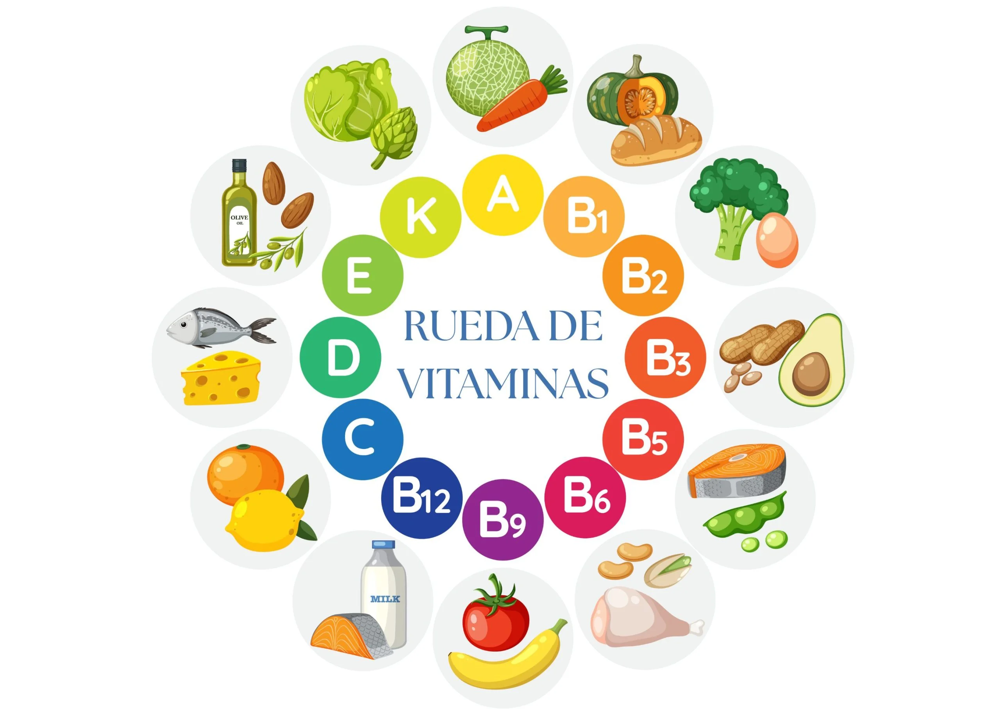

¿Sabías que lo que comes cada día tiene el poder de mantener tu cuerpo funcionando correctamente y hasta influir en tu salud a nivel celular?
En este sitio web, daremos a conocer todo acerca de las vitaminas, su clasificacion, funciones y cómo son piezas claves para el buen funcionamiento de nuestro cuerpo.
Hablaremos sobre:
- Vitaminas
- Reto Vitaminico
- Clasificacion y Funciones
- Importancia
- Usos
- Actividades
